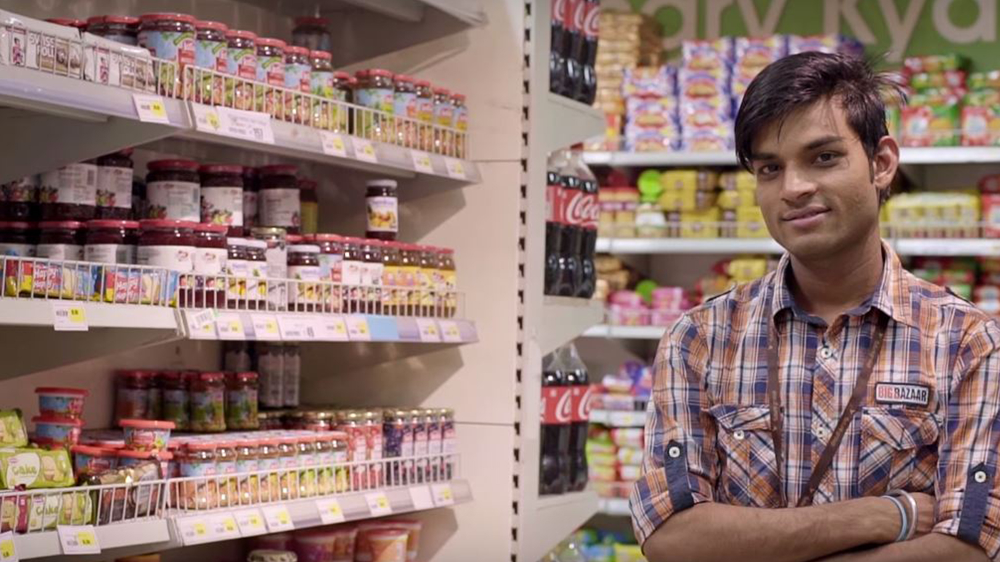

 

Every year, come January, there’s palpable excitement across India for Big Bazaar’s Sabse Saste Din. Held around Republic Day, Sabse Saste Din spans multiple days and promises you the best deals across a spectrum of products at the right prices. Over the years, it has completely changed the way India shops, spawned other similar ‘shopping festivals’ and turned into a carnival of sorts that people look forward to year on year.
Before we tell you the story of how it all started, here’s a look at the top-selling products from last year’s Sabse Saste Din. The parallels are sure to boggle your mind!
Now that you have an idea of how big Sabse Saste Din actually is, let’s take you on a fascinating journey of how it all began and grew into what it is today.

Around the year 2000, the concept of a ‘supermarket’ was still considered to be a very western idea. Most people had only read about it and maybe watched it in American sitcoms. It was at the local kirana store that most Indians shopped for their grocery and other household items. And then in 2001, something happened. The retail space witnessed a massive disruption, the magnitude of which remains unrivalled till date. India had got its first Big Bazaar store in Kolkata, and in no time, people discovered the delights of shopping while walking through aisles, navigating their trolleys and choosing between more brands than they could imagine. The best part was that the prices of the products were no different from what they got at their favourite kirana stores. In a lot of cases, they were in fact cheaper.
With Big Bazaar, the ‘supermarket experience’ had not only arrived in India, but had also gone mainstream. It was only a matter of time then that Big Bazaar came to dominate the brick-and- mortar retail space with stores spread across India. And mind you, this was just the proverbial tip of the iceberg. In 2006, they had their first ever Republic Day Sale and this event, completely changed the way India shopped.
The Republic Day sale, that has over the years come to be known as Sabse Saste Din, gave Indians all that they were looking for – lowest prices on their favourite products, a sale spanning multiple days and most importantly, the supermarket experience. India gave it a thumbs up and how. During the first such sale, the footfalls at Big Bazaar’s Lower Parel outlet were so high that cops had to be called in. Ever since, Sabse Saste Din has only come to be associated with mind-boggling numbers – crores of people visiting Big Bazaar stores during the sale, lakhs and lakhs of items sold and revenues earned to the tune of hundreds of crores. This happens unfailingly, year on year. It’s no exaggeration then to say that Sabse Saste Din can be credited with taking India’s relationship with shopping to a new level altogether.
It’s as if the whole country is out there shopping during those days, and why not? Right from stocking your kitchen to getting yourself a wardrobe makeover and shopping for your next holiday, you can pretty much do everything once you’ve walked into a Big Bazaar. Shopping was never considered to be a family excursion, but Sabse Saste Din changed that perception. Today Big Bazaar is a hit with families because it has something for each member.
Every new Sabse Saste Din sale builds on insights and learnings from the previous one, thus giving the customer an enhanced experience year on year.
Along the way, Sabse Saste Din spawned many similar ‘sales’ from competing retailers, but its popularity remains uncontested. Talk about the first mover advantage. In many ways, it’s a trendsetter and has owned the period around Republic Day, so much so that people look forward to it every year as though it’s a festival. People flock to their nearest Big Bazaar store, serpentine queues and insane crowds notwithstanding. What started off as a 1-2 day event has now morphed into a shopping carnival that lasts nearly a week, thanks to the overwhelming response it has been receiving from consumers. Given that it happens in January, Sabse Saste Din sets the tone for similar such ‘sales’ for the rest of the year by other retail players.
Like any other festival, preparations for this one too start months in advance. Each and every person working in every Big Bazaar store across India strives to make Sabse Saste Din special for you – the consumer. And the enthusiasm levels are as though they’re prepping up for a family wedding. This video gives you wonderful glimpse into the passion that goes behind every Sabse Saste Din and the heroes that make it possible.
Since its inception, the team behind Sabse Saste Din has been constantly innovating to keep its existing customers happy and attract new ones, and this year is no different. To be held between January 24 and 28, this year you can order the top 100 offers online and if you’re shopping at a store, you can enjoy fast billing. All you need to do is book your pass online for Rs 50 and turn up at the billing counter at the designated time. No wasting time in long queues. Moreover, this pass is fully redeemable at the time of shopping. They have also launched a Sabse Saste Din game this time. You just need to play and you stand a chance to win shopping vouchers upto Rs 1 crore. Exciting, innit?
Sabse Saste Din has changed and grown every year for the past decade. The only thing that hasn’t changed is its ability to still attract and delight the Indian customer. So save the dates January 24 to 28, visit your nearest Big Bazaar with your family and make the most of this annual shopping festival.